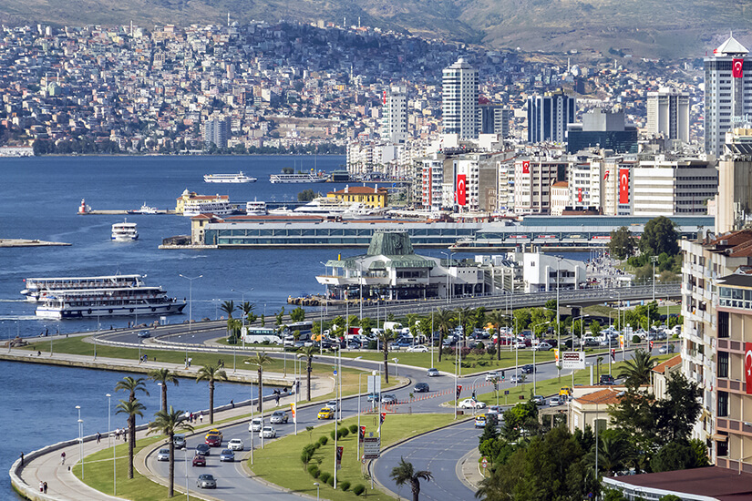
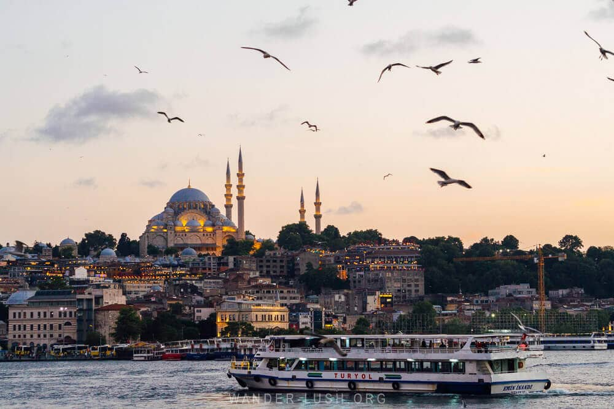
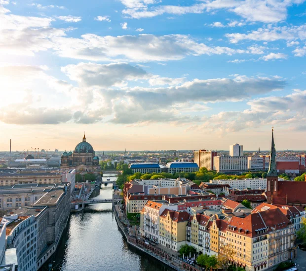

Bodrum, where my journey began

Izmir, where I went to high school

Istanbul, where I studied Business Administration
Hello! I am a master's student at HWR Berlin. My journey has taken me from the coast of Turkey to Istanbul and eventually to Berlin.
I was born in Bodrum, Turkey, a beautiful coastal town. I later moved to Izmir for high school and then to Istanbul to study Business Administration at Istanbul University. Each city became an important part of my personal journey.
Bodrum, where my journey began

Izmir, where I went to high school

Istanbul, where I studied Business Administration
During my university studies, I spent an Erasmus semester at HWR Berlin. That experience introduced me to Berlin and created a connection that would bring me back years later.
After graduating, I worked at PwC in Istanbul for five years as a consultant. During bank audits, I had my first experience working with big data, which sparked my interest in the connection between business and technology.
Five and a half years ago, I moved back to Berlin. I now work at BASF as a transfer pricing specialist. While my professional experience has strengthened my business knowledge, I want to develop my technical skills and learn how to apply them in practice.

Berlin, my home for the past five and a half years
This is why I decided to pursue a master's degree at HWR. My goal is to combine my business background with the technical knowledge I gain during my studies.
Outside work and university, I run a book club, play tennis, and enjoy hiking and travelling. Exploring new places, discovering new ideas through books, and spending time outdoors are all important parts of my life.
Looking back, every city has contributed something different to who I am today. I am excited to see where this next chapter in Berlin will take me, both personally and professionally.